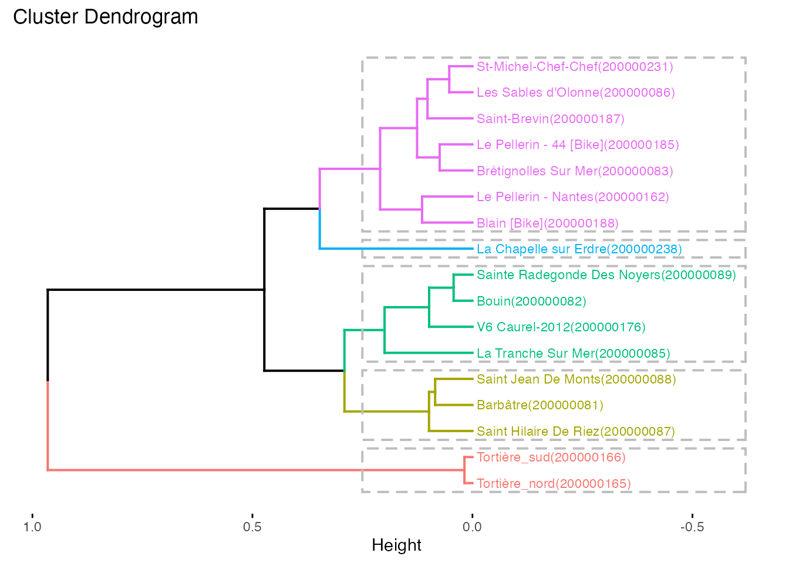

L’objectif de ce document de travail est d’ouvrir et de lire le contenu d’un fichier xlsx contenant des données dans l’onglet comptages_automatiques et de réaliser une classification hierarchiques des sites
La fonction read_compt_auto() permet de lire les comptages automatiques et de calculer les indicateurs utilisés pour la classification hierarchique
xlsx_path <- system.file("example-data/02_simplified.xlsx", package = "evavelo")
predictors <- evavelo::read_compt_auto(xlsx_path)
predictors
#> # A tibble: 17 x 12
#> site_name id_site id_channel name pred_wd_wp pred_wd_ho pred_jul_aug
#> <chr> <chr> <chr> <chr> <dbl> <dbl> <dbl>
#> 1 Barbâtre 200000… 200000081 Barbâtre 0.641 0.714 0.627
#> 2 Blain 200000… 251000188 Blain [B… 0.519 0.599 0.449
#> 3 Bouin 200000… 200000082 Bouin 0.664 0.692 0.534
#> 4 Brétignolles… 200000… 200000083 Brétigno… 0.587 0.680 0.421
#> 5 La Chapelle … 200000… 200000238 La Chape… 0.621 0.605 0.277
#> 6 La Tranche S… 200000… 200000085 La Tranc… 0.680 0.699 0.395
#> 7 Le Pellerin … 200000… 353246746 Le Pelle… 0.587 0.616 0.444
#> 8 Le Pellerin … 200000… 200000162 Le Pelle… 0.534 0.598 0.350
#> 9 Les Sables d… 200000… 200000086 Les Sabl… 0.601 0.661 0.471
#> 10 Saint Hilair… 200000… 200000087 Saint Hi… 0.626 0.719 0.579
#> 11 Saint Jean D… 200000… 200000088 Saint Je… 0.567 0.701 0.638
#> 12 Saint-Brevin 200000… 200000187 Saint-Br… 0.627 0.660 0.418
#> 13 Sainte Radeg… 200000… 200000089 Sainte R… 0.685 0.678 0.523
#> 14 St-Michel-Ch… 200000… 200000231 St-Miche… 0.613 0.684 0.504
#> 15 Tortière_nord 200000… 201000165 Tortière… 0.849 0.755 0.168
#> 16 Tortière_sud 200000… 201000166 Tortière… 0.841 0.767 0.166
#> 17 V6 Caurel-20… 200000… 201000176 V6 Caure… 0.719 0.724 0.481
#> # … with 5 more variables: pred_pont_jul_aug <dbl>, pred_wp_17_9 <dbl>,
#> # pred_we_09_11 <dbl>, missing_perc <dbl>, n_missing_days <int>
pred_df <- predictors %>%
select(starts_with("pred")) %>%
as.data.frame()
rownames(pred_df) <- paste0(predictors$name,"(",predictors$id_site, ")")
clust <- pred_df %>%
dist() %>%
hclust(method = "ward.D2")
fviz_dend(clust, cex = 0.6,k = 5, rect = TRUE, horiz = TRUE)
#> Warning: `guides(<scale> = FALSE)` is deprecated. Please use `guides(<scale> =
#> "none")` instead.